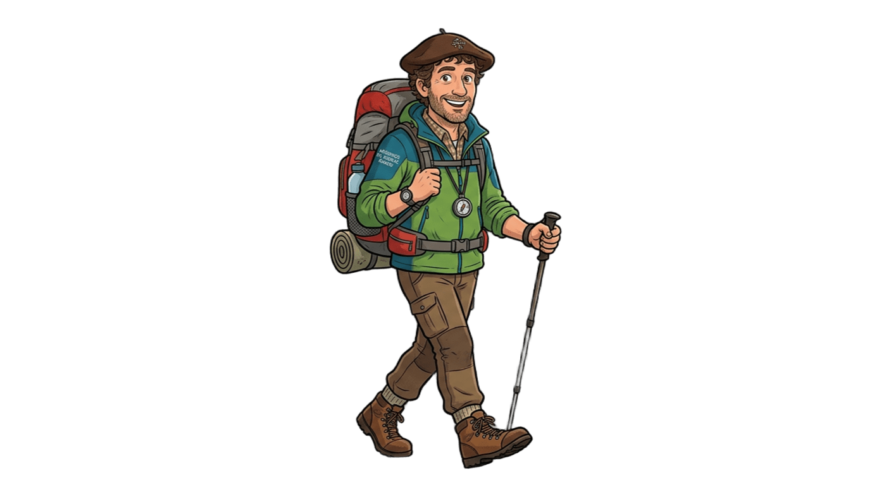

Les chemins sont nombreux, et chacun d'eux raconte une histoire…
Certains mènent aux burons, d’autres aux rivières…
Lis-le bien et dis-moi : comment s’appelle ce sentier ?
✅ Tu as trouvé le bon chemin !!
Le sentier des Fagous tire son nom des hêtres (appelés “fayards” ou “fagous”), très présents ici.
❌ Mauvaise réponse… Essaie encore !